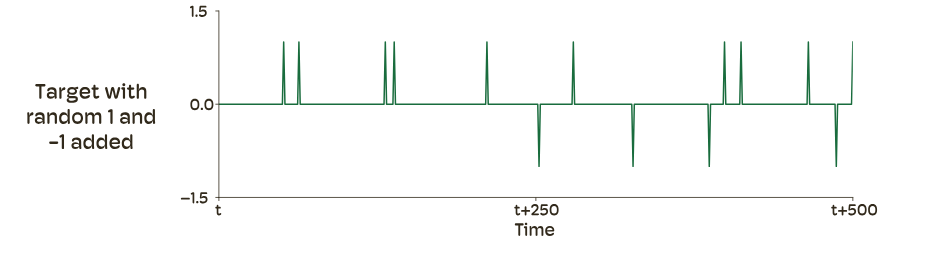
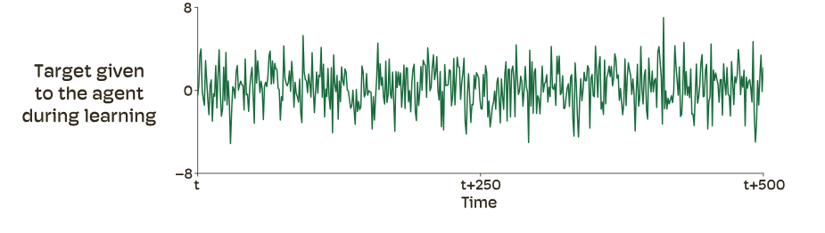
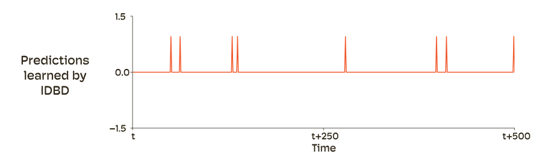
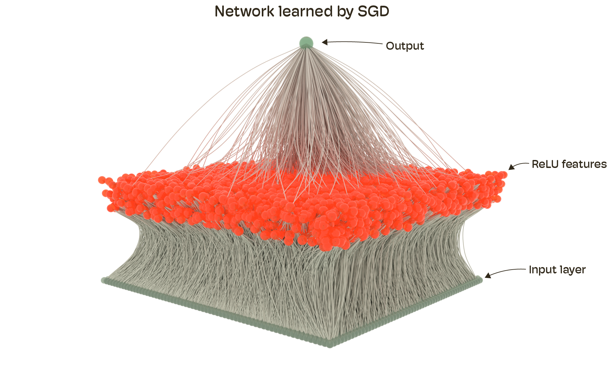
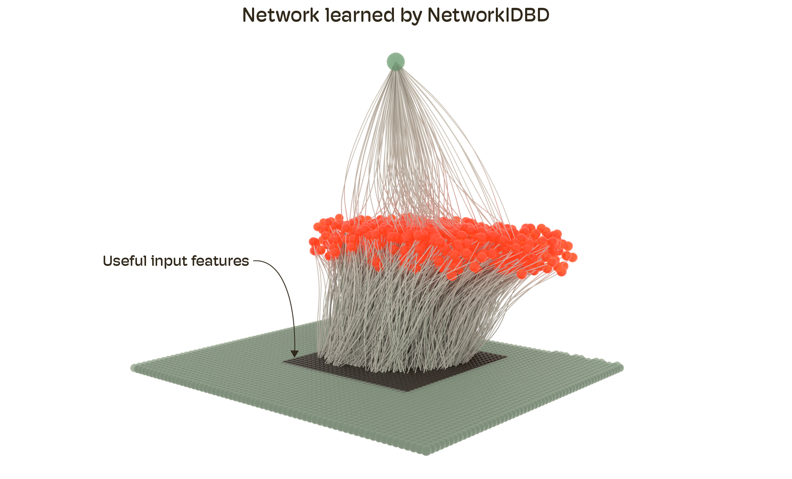

我们训练大模型时，默认喂给它们的是人类精心清洗过的精选数据集。但真正的“经验”，智能体在真实世界里一步步观察到的数据流，可没这么干净。这篇来自Oaklab的博客用一组极简实验，点破了一个被忽视的根本问题：现有优化器（以SGD为代表）从设计上就不擅长从噪声经验中学习。
从经验中学习，不同于从精选数据集中学习。那些从精选数据集学习的算法，可以假定所有数据都对学习有用。这通常是由人类来保证的：他们收集、清洗、过滤原始数据，让它可以直接被学习算法消费。而经验则不同，它并不总是包含可学习的关联。
在深度学习当前的大多数应用中，我们的系统都从人类精选的数据集学习，算法设计者几乎没有动力去开发能从未经过滤的噪声数据流中学习的算法。现有算法无法从经验中学习，这一点用简单的例子就很容易在经验上演示出来。
设想一个用于学习监督式预测任务的简单数据流。在每一步，智能体观察一个二值特征。如果这个特征的值为1，那么真实标签就是1；否则真实标签就是0。该特征的值在每一步都从伯努利分布中采样，在每一个时间步，特征为1的概率都是1%。
我们可以通过观察特征值和标签随时间的变化，把这一输入与标签数据流可视化。如图1所示。


一个线性系统可以通过从特征到预测学习一个权重为1，来完美地学会这个预测。一个简单的学习机制是：用一个小步长参数，沿着相对于样本均方预测误差计算出的梯度方向，去更新这个权重参数。
我们可以通过给标签加入一些噪声，让这个数据流更复杂。每一步，我们以1%的概率，随机地给标签加上+1或-1。更新后的数据流如图2所示。注意，在这个数据流中，只有一部分标签是可预测的，也就是那些特征为1时出现的标签。其他的+1和-1标签是不可预测的，因此也是不可学习的。


第二条数据流比第一条更接近经验，因为未经过滤的经验既包含可预测的成分，也包含不可预测的成分。我们可以通过给标签加噪声，让标签变得更复杂。我们加入从正态分布中采样的噪声，其均值为0、方差为5（换成别的取值也会得到定性上相似的结果）。这条更新后数据流的标签如图3所示。如果我们现在看这些标签，已经不再容易通过肉眼从噪声中找出那个可预测的成分了。

到目前为止，我们一直是在给标签加噪声。而在原始经验中，输入也比我们当前的单一特征要杂乱得多。我们再额外加入4095个特征，作为数据流的一部分。这些特征中的每一个也都从伯努利分布中采样其值，且为1的概率都是1%。这些特征与之前那个特征的区别在于：它们与标签不相关，对学习毫无用处。
现在，我们可以在这组特征上，利用图3中那些带噪声的标签，来学习一个线性预测器。每个特征都有自己连接到预测的权重参数。所有权重都初始化为0。我们使用梯度下降配合SGD优化器来学习。得到的预测结果如图4所示。

这里要指出一个关键观察：尽管标签中唯一可学习的部分，就是第一个特征为1时出现的那个+1，但SGD学到的并不是这个。SGD及其变体，比如Adam（Kingma & Ba, 2015）和RMSProp（Tieleman & Hinton, 2012），试图最小化所有标签上的误差，最终把噪声也吸收了进去。这背后的原因已被充分理解：SGD把全部预测误差的信用分配，给到了所有梯度过零的参数上，哪怕其中一些参数连接的是对学习毫无用处的信号。它没有任何机制去区分“可预测的标签”与“不可预测的标签”，也没有任何机制把误差的信用更选择性地分配到参数上。
现在我们换用另一种算法，叫做增量式Delta Bar Delta，简称IDBD（Sutton, 1992）。与SGD不同，IDBD能够学会给不同的信号分配不同数量的误差信用。此外，如果某个标签不可预测，IDBD还能学会不为该预测误差分配信用。我们把IDBD应用到同一个问题上，用相同的步数学习，并把预测结果画在图5中。与SGD不同，IDBD只学到了数据流中可预测的那个部分。

同样的实验可以推广到非线性情形：把IDBD扩展成能与神经网络配合工作的版本。我们称之为NetworkIDBD。
我们需要一个需要非线性特征学习的数据流。我们用MNIST数据集（LeCun et al., 1998）来构造。MNIST数据集包含数字的图像。每张图像分辨率为28×28，并带有一个标签。
我们把这张图像嵌入到一张更大的64×64图像的中心。中心的28×28像素有时会显示一个MNIST数字。其余像素仍然是带噪声的伯努利特征，为1的概率是1%。每当中心渲染出一个数字时，如果数字是奇数，标签就是+1；如果是偶数，就是-1。当中心没有数字时，标签为0。在每一步，输入特征有10%的概率会在中心渲染出一个数字。最后，我们给标签加入从正态分布采样的噪声，均值为0、方差为5。我们把这条数据流称为NoisyMNIST。这条数据流中的一些样本如图6所示。

和之前那条数据流类似，NoisyMNIST数据流中，有的标签可预测，有的不可预测。同样地，它的输入特征里，有的与标签相关（中心的28×28区域），有的不相关。
我们把这些输入连接到一个拥有10000个非线性ReLU单元的隐藏层。从输入到ReLU单元的权重，从区间(-0.0001, 0.0001)中均匀采样。ReLU单元则以0权重连接到预测单元。
我们用SGD和NetworkIDBD来学习权重参数。学习完成后，我们把那些“吸收了学习该任务信用”的网络连接可视化：渲染所有权重幅度大于0.0002的连接（即略大于最大初始值）。
用SGD学习的网络如图7所示，而用NetworkIDBD学习的网络如图8所示。


可视化结果展示了：SGD增大了所有输入特征的输出权重，而NetworkIDBD只增大了来自中心28×28区域的权重（该区域用另一种颜色高亮）；而SGD却增大了所有特征的权重。
我们认为，SGD及其变体试图学习所有关联（哪怕只是噪声）的这一局限，是当前系统无法从嘈杂的在线数据流中良好学习的根本原因。为了绕开这个局限，当前的算法使用从完整数据集或回放缓冲区中按独立同分布（IID）采样得到的大批量（mini-batch）。通过对许多样本的梯度取平均，它们能降低噪声关联对权重更新的影响。然而，这让它们非常不适合在线持续学习（online continual learning）。要实现从经验中有效的在线学习，我们必须构建更擅长信用分配的新算法。我们的判断是：最好的方法将是那些学会分配信用的方法。NetworkIDBD就是这类算法的一个实例化。
参考：https://oaklab.ai/posts/learning-from-experience-instead-of-curated-datasets